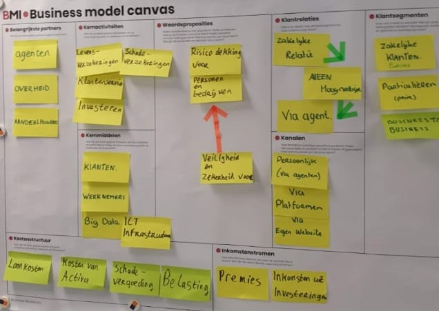

Turkse dochter van een internationale verzekeraar. De verzekeraar biedt een breed pallet aan verzekeringen: bijv. levens-, schade-, inkomens- en pensioenverzekeringen De concurrentie op de markt is zeer sterk, waardoor WA (MTPL) verzekeringen verliesgevend geworden zijn voor deze verzekeraar. De verzekeraar wil graag actief blijven in deze markt (auto verzekeringen), omdat deze verzekeringen een basis vormen voor andere verzekeringen. Het bedrijf verkoopt zijn polissen via een agentennetwerk en heeft dus geen rechtstreeks contact met haar klanten.
Hieronder staat het originele BMC uitgewerkt door klasgenoten. Deze is gemaakt op basis van de informatie uitgereikt tijdens de les. Dit BMC is uitgewerkt voor een verzekeringsmaatschappij genaamd AXA.
Het doel van de innovatie is dat klanten minder schade maken. Om veilig rijgedrag te stimuleren is er een idee uitgewerkt van een apparaat dat rijstatistieken bijhoudt. Dit apparaat houdt bij wat de afgelegde afstand is, hoeveel de auto heeft verbruikt, hoe groot de afstand tot de voorgangers zijn en hoe snel de auto optrekt. Al deze factoren worden omgezet in een 'veiligheidscijfer'. Dit cijfer is bepalend voor het maandbedrag van de klant. Als een klant een goed cijfer heeft, wordt het maandbedrag verlaagd. Maar als een klant een slecht cijfer heeft, wordt het maandbedrag verhoogd. Het apparaat wordt verplicht gesteld voor iedere verzekerde, omdat alleen dan het effect van het apparaat goed inzichtelijk wordt. Het apparaat wordt gratis geleverd, en zal daarom geen grote reden zijn om te vertrekken naar een andere verzekeraar.
Het BMC blijft op de meeste punten hetzelfde. De innovatie geeft slechts een aantal wijzigingen. Deze zullen hieronder uiteengezet worden.
De verzekeraar gaat niet zelfs al deze kastjes maken of leveren. Deze worden gekocht van een bedrijf die hierin gespecialiseerd is. Door deze deal wordt het bedrijf waarvan deze kastjes worden gekocht een belangrijke partner.
De kastjes die nodig zijn zullen flink wat geld kosten. Maar uiteindelijk hopelijk schades voorkomen en geld opleveren.